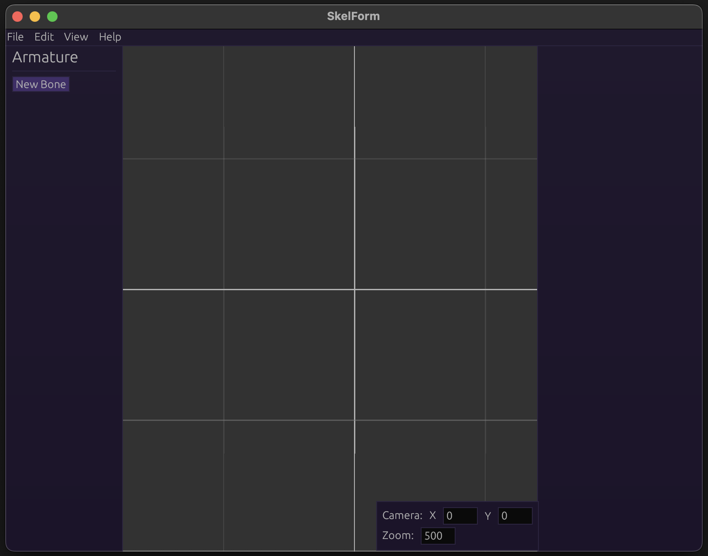
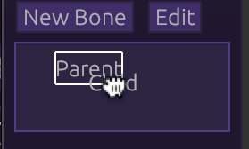
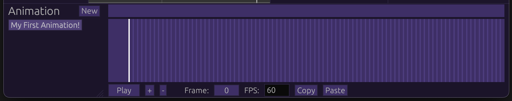
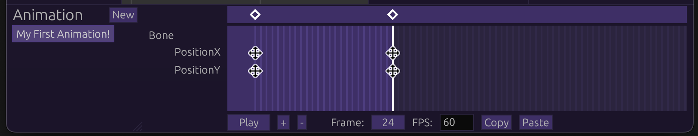
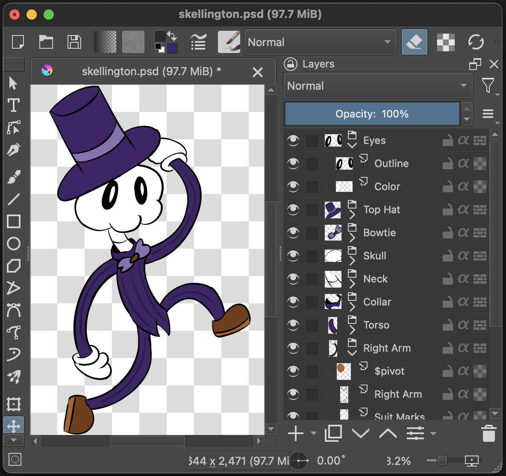
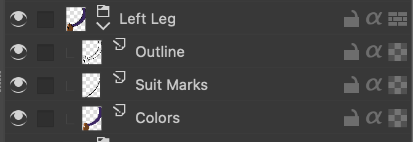
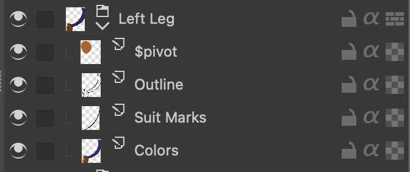

Introduction
SkelForm is a collection of software for 2D animation, primarily focused on video games. Said set includes the editor, runtimes, and a file specification.
SkelForm (and this documentation) is a work in progress.
Table of Contents
- Starter Guide - Written guide on starting out with SkelForm
- PSD Rigging - Guide and references for creating rigs out of PSD files
Starter Guide
Welcome, and thank you for using SkelForm!
This starting guide will help you quickly get on your feet with the process, from setting up the editor to using your work in a game.
Table of Contents
- Installation - Downloading and installing the editor
- Basics - Getting comfortable with the editor, and creating your first rig
- Animating - General overview of the keyframe editor and the animation process
- Finale - Exporting your rig, and using it in a game!
Before You Download...
...check out the Web version , which does not require downloading!
Otherwise, read on.
Installation
The SkelForm editor can be download from the main site's Download page.
It is only prvided as a portable program, and does not have an installer.
Once it is downloaded, unzip/uncompress the zip file and open the SkelForm binary (SkelForm.exe on Windows).
If you see a screen like this, then all is good!

Let's get started and go through the basics.
Basics
For the basics, we will go through a simple rigging process, as well as a little tour around the editor.
Table of Contents
- Help Light
- Moving & Zooming the Camera
- Your First Bone
- Parent & Child Bones
- Parent-Child Bone Inheritance
- Pivots & Hinges
Help Light
Upon opening the editor for the first time, you may see a yellow highlight on the New Bone button.
This is intended for those that prefer a hands-on guide within the editor. For the sake of this written guide, let's disable it from Help > Stop Help Light.
Moving & Zooming the Camera
To move the camera, drag the mouse around while holding left click.
To zoom in/out, edit the zoom value in the bottom right, or press the -/+ keys on your keyboard (located to the right of the number keys).
The camera can also be controlled with touchpad gestures (double-swipe to move, pinch to zoom).
Your First Bone
Click the New Bone button on the Armature panel (left side). This will create a new bone as well as automatically select it.
The Bone panel (right side) will show the bone's fields and properties such as position, scale, etc., and can be edited.
The bone can also be edited by dragging the mouse while holding left-click. This will edit the corresponding field that is selected on the top left bar (Move, Scale, Rotate).
Since left-click dragging now moves the bone, the camera can still be moved around with the mouse by holding the Modifier key (CTRL on Windows/Linux, CMD on Mac).
Parent & Child Bones
Your only bone is acting on it's own, but it can also be connected to others to form joints and the like.
Create another bone, and you will see a new Drag button. This will toggle to a mode that allows dragging bones around the list. Drag a bone on top of another and watch it highlight:

Release the mouse, and now you have a parent bone and a child bone!
Switch back to Edit mode (where Drag was), and select the parent bone. As you edit it in any way, the child bone will be affected as well.
Parent-Child Bone Inheritance
Child bones inherit all of their properties from their parent's. This means that if a parent's position is (2, 2), for example, then the bone's position will be it's own, plus (2, 2).
This also means the child bone's properties are relative to the parent. If a child bone's position is set to (0, 0), for example, this will not necessarily position it to the center of the grid. Instead, it will be exactly where it's parent is.
Pivots & Hinges
In addition to the above, child bones inherit a parent's rotation in a way that it's 'orbiting'. This orbiting behaviour allows the parent to act as the pivot point of it's child(ren).
It is good to note that bones do not need a texture and can be invisible, so there is nothing wrong with having a parent bone that only serves the purpose of being a pivot.
Conclusion
By now you have hopefully gotten a good idea of how bones work. Play around wtih them a little more and see what you can make!
Once you are ready, let's start animating it!
Animating
In the previous section, we went over the basics with bones and how they work.
Right now, they're static and boring. Let's change that!
Table of Contents
Opening Animation Editor
On the top right, you will see Armature and Animation. Click the latter, and a panel at the bottom of the screen will appear.
To the left of it, click New to create a new animation. You will be prompted to name it first, though you can press Enter to leave it with the default name.
The animation editor should appear:

Let's get to animating!
Adding Keyframes
Click on a line anywhere in the animation editor. Edit the bone in any way (moving, scaling, etc), and you should see it appear in the animation editor:

This means that your edit has been recorded!
You will notice that in addition to the keyframe that you clicked, there is one at the very left. This is the initial value of the field that you edited, so the animation knows how to interpolate the field.
Speaking of interpolation...
Playing The Animation
Let's play the animation, either by pressing the spacebar or clicking the Play button at the bottom of the animation editor.
You should see your bone being animated! This will keep running in a loop until you stop it (spacebar or Stop button).
Editing Keyframes
Keyframes can be individually edited, and the individual fields can even be dragged around. Try dragging either the diamonds at the top of the keyframe editor, or the icons that correspond to their field. The animation will be changed to reflect their places in the timeline.
Clicking a diamond will also 'select' the keyframe. The right panel will show extra information about the selected keyframe, along with some options. Play around with them and see how the animation changes!
Conclusion
The animation process is hopefully simple to grasp, as it is essentially recording edits and adjusting keyframes. Realistically however, an animation will contain lots of them. Spend some time creating more animations, and you will be a professional keyframe manager in no time!
Finale
Hopefully by now, you are familiar and comfortable with using the editor.
So, where to go from here?
If your art program of choice can export .psd files, check out the PSD Structure section for how you can structure your work to be immediately usable as a SkelForm rig. This way, you won't have to create it from scratch.
PSD Rigging
SkelForm supports importing and extracing Photoshop Document (PSD) files. The file is expected to have a specific structure, which will then be used to form a rig.
Table of Contents
Sample File
A sample PSD file may be downloaded to be kept as a reference, and will automatically form a proper rig when imported in SkelForm.

Main Structure
Bones are made out of groups, and all layers of a group will be merged to form it's texture:

Pivots
By default, bones created from groups will not have a dedicated pivot parent, and will be centered.
To add a dedicated pivot, create a layer specifically named $pivot, and make it a child of the group in question. The pivot's position will be based on the top-left corner of the layer:

Although this layer will be invisible in the rig, you may need to draw on it to be able to position it in your art program.
When importing the PSD, that group should now be comprised of 2 bones: the main bone (pivot), and the texture. From here on out, it is recommended to only edit the main bone.